Day 0, Hour 18
If I am to investigate the phenomenon that's currently befalling Unova, I need to properly understand how the Pokémon have adapted to it, or rather how said phenomenon caused them to evolve.
He wouldn't understand, of course. But to chose to ignore or dismiss it would be disrespectful to those Pokémon.
If I am to investigate the phenomenon that's currently befalling Unova, I need to properly understand how the Pokémon have adapted to it, or rather how said phenomenon caused them to evolve.
He wouldn't understand, of course. But to chose to ignore or dismiss it would be disrespectful to those Pokémon.
Cherubi
"Wonder Cherry"
Over time, their aroma has mutated into a light-bending veil that makes them virtually impervious to harm. The more of them gather, the more their veils fill with glowing colors and flaring sparks. Sadly, their taste is so delicious that the vast majority of their predators have completely adapted to it, and their regenerative abilities prove useless as they always get devoured to the very last crumb.
"Wonder Cherry"
Over time, their aroma has mutated into a light-bending veil that makes them virtually impervious to harm. The more of them gather, the more their veils fill with glowing colors and flaring sparks. Sadly, their taste is so delicious that the vast majority of their predators have completely adapted to it, and their regenerative abilities prove useless as they always get devoured to the very last crumb.
Nincada
[REDACTED]
Although their morphology is fit for living in the depths of dark-lit woods, their limited combat abilities caused members of this species to gradually move closer to cities. Thanks to their highly-developed mental capacities and fast typing speed, they prove to be surprisingly skilled technicians. However, they tend to lack organizational skills, meaning they will often lose track of their previous work.
 Addendum: REDIRECT: DATA STORED IN [individuals.arch]
Addendum: REDIRECT: DATA STORED IN [individuals.arch]
[REDACTED]
Although their morphology is fit for living in the depths of dark-lit woods, their limited combat abilities caused members of this species to gradually move closer to cities. Thanks to their highly-developed mental capacities and fast typing speed, they prove to be surprisingly skilled technicians. However, they tend to lack organizational skills, meaning they will often lose track of their previous work.
Lilligant
"Yay Guava"
The ground tissues of its leaves are composed of a mix of plant cells and crystallized dragon energy, making them glow faintly; thanks to this, it can never get diseased, and can live under any climate. It is very proud of its appearance, constantly showing off by scattering around flower petals and crystal pebbles; if left ignored, it may get spiteful in return. It only seeks to mate with other females.
"Yay Guava"
The ground tissues of its leaves are composed of a mix of plant cells and crystallized dragon energy, making them glow faintly; thanks to this, it can never get diseased, and can live under any climate. It is very proud of its appearance, constantly showing off by scattering around flower petals and crystal pebbles; if left ignored, it may get spiteful in return. It only seeks to mate with other females.
(Ground tissue cellular structure)

Growlithe
"The Hellpuppy Army"
They march in packs composed of about a dozen individuals, marking the land as their own. Each one wears an armor made of cooling lava encrusted with dark blue gems, and is well-versed in the art of close-ranged combat, mental focus, and ki manipulation. The younger ones of the pack may appear affectionate, but it is only a trick to spread the pestilence they carry.
"The Hellpuppy Army"
They march in packs composed of about a dozen individuals, marking the land as their own. Each one wears an armor made of cooling lava encrusted with dark blue gems, and is well-versed in the art of close-ranged combat, mental focus, and ki manipulation. The younger ones of the pack may appear affectionate, but it is only a trick to spread the pestilence they carry.

Solosis
"Soloseed"
They let themselves be freely carried by the wind, leaving a trail of sweet aroma behind them. At the mercy of wind currents, they look as if they are dancing through the sky. When they reach a host fit for pollination, they psychically latch onto it and start leeching its life force away; when the host if sufficiently drained, it can be made to produce new seeds, perpetuating the cycle.
"Soloseed"
They let themselves be freely carried by the wind, leaving a trail of sweet aroma behind them. At the mercy of wind currents, they look as if they are dancing through the sky. When they reach a host fit for pollination, they psychically latch onto it and start leeching its life force away; when the host if sufficiently drained, it can be made to produce new seeds, perpetuating the cycle.
Abra
"Solosalis"
Once the seed has absorbed enough nutrients, it grows inside its membrane, stretching the latter before it hardens into a diamond-like chrysalis. Completely immobile, it creates bursts of winds with its mind to move around at high speeds, but cannot see where it's going; because it spends its time psychically polishing its shell, its edges are so sharp that anything it collides with is instantly sliced in half.
"Solosalis"
Once the seed has absorbed enough nutrients, it grows inside its membrane, stretching the latter before it hardens into a diamond-like chrysalis. Completely immobile, it creates bursts of winds with its mind to move around at high speeds, but cannot see where it's going; because it spends its time psychically polishing its shell, its edges are so sharp that anything it collides with is instantly sliced in half.
Gothitelle
"Gothiclus"
After growing into a humanoid-like pluricelular organism, it breaks out of its chrysalis by making it crumble to dust, then proceeds to consume it. Its body is then able expurgate it at will, but it must ingurgitate it again afterwards. If one is seen dancing, it must be avoided at all costs; it is likely trying to lure a prey to latch onto with its hidden teeth, in order to replace the mineral nutrients it lost.
"Gothiclus"
After growing into a humanoid-like pluricelular organism, it breaks out of its chrysalis by making it crumble to dust, then proceeds to consume it. Its body is then able expurgate it at will, but it must ingurgitate it again afterwards. If one is seen dancing, it must be avoided at all costs; it is likely trying to lure a prey to latch onto with its hidden teeth, in order to replace the mineral nutrients it lost.
Vanillite
"Cursellite Cream"
The highly alcoholic substance that makes up its body confers it with a disproportionate amount of strength. It likes to draw attention by pretending to be hurt, but the smell of its tears is so strong that it'll make anyone pass out; this earned it the nickname of "curse-flavored cream", even though it means no harm. It is customary to adorn it with a paper umbrella to make it more recognizable.
"Cursellite Cream"
The highly alcoholic substance that makes up its body confers it with a disproportionate amount of strength. It likes to draw attention by pretending to be hurt, but the smell of its tears is so strong that it'll make anyone pass out; this earned it the nickname of "curse-flavored cream", even though it means no harm. It is customary to adorn it with a paper umbrella to make it more recognizable.


Fake Tears
Pilowswine
"Moldyswine Cream"
When the cream that makes up its body goes bad, moldy brown hair forms all over it. Said hair is highly poisonous to the touch, and the Pokémon itself only survives thanks to his body's extreme alcohol level. It has learned to produce icy mist to move things around, and can even use this to claw at people it wants to keep away. Meanwhile, it is slowly purging itself, leaving behind toxin-full droppings encased in ice.
"Moldyswine Cream"
When the cream that makes up its body goes bad, moldy brown hair forms all over it. Said hair is highly poisonous to the touch, and the Pokémon itself only survives thanks to his body's extreme alcohol level. It has learned to produce icy mist to move things around, and can even use this to claw at people it wants to keep away. Meanwhile, it is slowly purging itself, leaving behind toxin-full droppings encased in ice.
Articuno
"Heaticuno Cream"
Each of its feathers is made of crystallized ethyl ice cream so pure that it completely reflects heat; as a result, the air around its body is always warm. When it flies high up, the sudden temperature shift it produces can cause mild thunderstorms. While its feathers are a renowned luxury treat, inexperienced tasters should never have more than a few nibbles, as their sheer purity may result in an instant brain arrest.
"Heaticuno Cream"
Each of its feathers is made of crystallized ethyl ice cream so pure that it completely reflects heat; as a result, the air around its body is always warm. When it flies high up, the sudden temperature shift it produces can cause mild thunderstorms. While its feathers are a renowned luxury treat, inexperienced tasters should never have more than a few nibbles, as their sheer purity may result in an instant brain arrest.
NOT_FOUND_ERROR: SOME DATA WAS MOVED TO [SECTION: INVESTIGATION_REPORT]
Nincada
[REDACTED]
The Nincada who is helping me with this archiving project is currently located in a place where she is very unlikely to be found and from where she is best able to work on it. However, there is also a very real risk involved with said location. To protect her, I have decided to remove her name from these reports, and simply refer to her as "Nincada".
[REDACTED]
The Nincada who is helping me with this archiving project is currently located in a place where she is very unlikely to be found and from where she is best able to work on it. However, there is also a very real risk involved with said location. To protect her, I have decided to remove her name from these reports, and simply refer to her as "Nincada".
Nincada was able to get me in contact with a Voice who went astray in our world; while this is not a very documented phenomenon, it appears that it does happen sometimes. I took the liberty of simplifying their responses to make the whole thing more comprehensible.
N: You know who I am, right?
UnoOEOA: Creep N lol
N: I'm not a creep!
UnoOEOA: showing up everywhere to stalk us
UnoOEOA: N twins lol
N: I'm just trying to investigate. I was hoping you could help.
UnoOEOA: ok sure
N: Can you tell me more about your Host? Like if Mars is their real name? Or what their goal is?
UnoOEOA: their name is
N: I can't read that.
UnoOEOA: call an azumarill they'll fix it
N: Nevermind. Can you tell me what her goal is?
UnoOEOA: we're gonna beat Dennis or whoever is the Plasma villain and then beat the league and then go back to doing bets
N: Those are your goals though? I was asking about theirs. Also, are you implying there might be someone other than Father pulling the strings?
UnoOEOA: IMAGINE IF THE VILLAIN IS ACTUALLY DENNIS ROFL
UnoOEOA: we decide what the goal is though
N: Okay, so you do think someone else is involved. Do you know who that is?
UnoOEOA: we can't see as well from inside
UnoOEOA: also some here are getting static and it's breaking chat
N: I'm having trouble understanding what you're saying.
UnoOEOA: ok i have a question
N: What is it?
UnoOEOA: do you seriously only see with your eyes, this is the first time we tried
UnoOEOA: no wonder they all keep bonking into walls you can't see shit ROFL
This was incredibly frustrating and I have learned nothing of value.
UnoOEOA: Creep N lol
N: I'm not a creep!
UnoOEOA: showing up everywhere to stalk us
UnoOEOA: N twins lol
N: I'm just trying to investigate. I was hoping you could help.
UnoOEOA: ok sure
N: Can you tell me more about your Host? Like if Mars is their real name? Or what their goal is?
UnoOEOA: their name is
N: I can't read that.
UnoOEOA: call an azumarill they'll fix it
N: Nevermind. Can you tell me what her goal is?
UnoOEOA: we're gonna beat Dennis or whoever is the Plasma villain and then beat the league and then go back to doing bets
N: Those are your goals though? I was asking about theirs. Also, are you implying there might be someone other than Father pulling the strings?
UnoOEOA: IMAGINE IF THE VILLAIN IS ACTUALLY DENNIS ROFL
UnoOEOA: we decide what the goal is though
N: Okay, so you do think someone else is involved. Do you know who that is?
UnoOEOA: we can't see as well from inside
UnoOEOA: also some here are getting static and it's breaking chat
N: I'm having trouble understanding what you're saying.
UnoOEOA: ok i have a question
N: What is it?
UnoOEOA: do you seriously only see with your eyes, this is the first time we tried
UnoOEOA: no wonder they all keep bonking into walls you can't see shit ROFL
Luxray
"Lord Good Night"
This incarnation of the Claw Fossil is the highest-ranking divinity of its Pantheon. According to myths, it is a patron of silent nights, who wields a blade made of lightning and a whip made of wood to strike down the nightmares and creatures that lurk in the dark until morning. Children are often taught not to fear stormy nights, as they are a sign that it is standing guard to protect them in their sleep.
"Lord Good Night"
This incarnation of the Claw Fossil is the highest-ranking divinity of its Pantheon. According to myths, it is a patron of silent nights, who wields a blade made of lightning and a whip made of wood to strike down the nightmares and creatures that lurk in the dark until morning. Children are often taught not to fear stormy nights, as they are a sign that it is standing guard to protect them in their sleep.
Shaymin
"Lord Parasol"
This minor deity is associated with survivalism; his body has adapted into a fertile ecosystem on which any plant can flourish, despite him being nocturnal and mostly sticking to shady areas. The roses on his back react violently towards aggressors, emitting burst of toxins that can cause burning rashes and short-term monoplegia. His head is filled with poisonous goo that he regurgitates to fend off predators, but also to attract mates.
"Lord Parasol"
This minor deity is associated with survivalism; his body has adapted into a fertile ecosystem on which any plant can flourish, despite him being nocturnal and mostly sticking to shady areas. The roses on his back react violently towards aggressors, emitting burst of toxins that can cause burning rashes and short-term monoplegia. His head is filled with poisonous goo that he regurgitates to fend off predators, but also to attract mates.

"The Night Pantheon"
Day 3, Hour 14
Opelucid City is mass-producing Helix Fossils to sell them?
Are the Elesa twins behind this very open black market operation?
Is this related to why the new King of Team Palsma came to visit the city?
This is all very concerning, but not necessarily linked to the rest of my investigations.

Opelucid City is mass-producing Helix Fossils to sell them?
Are the Elesa twins behind this very open black market operation?
Is this related to why the new King of Team Palsma came to visit the city?
This is all very concerning, but not necessarily linked to the rest of my investigations.
Kabutops
"Lady Domega"
It is said that none can approach the place in which this deity resides; as it rules over the domain of ultimate planning and strategy, its lair is littered with precise and inescapable traps that it carefully spends hours setting up. Its body produces a sticky substance on which rocks, fiber, and all kinds of materials get stuck, creating an intimidating and resilient shell. As a result, what it truly looks like underneath is unknown.
"Lady Domega"
It is said that none can approach the place in which this deity resides; as it rules over the domain of ultimate planning and strategy, its lair is littered with precise and inescapable traps that it carefully spends hours setting up. Its body produces a sticky substance on which rocks, fiber, and all kinds of materials get stuck, creating an intimidating and resilient shell. As a result, what it truly looks like underneath is unknown.